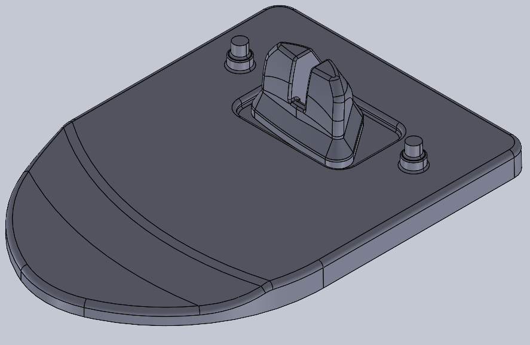
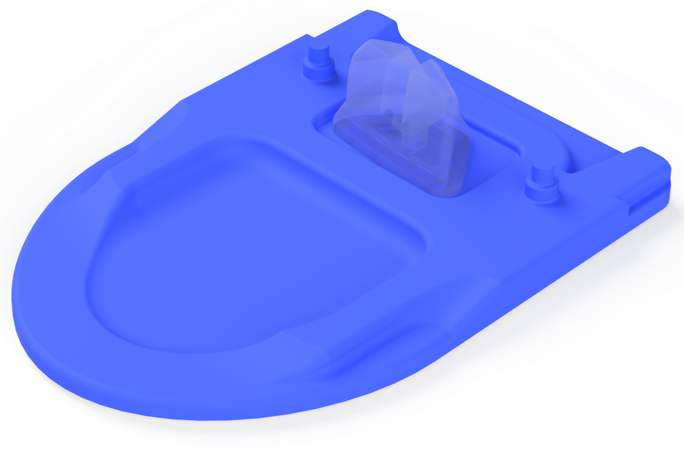
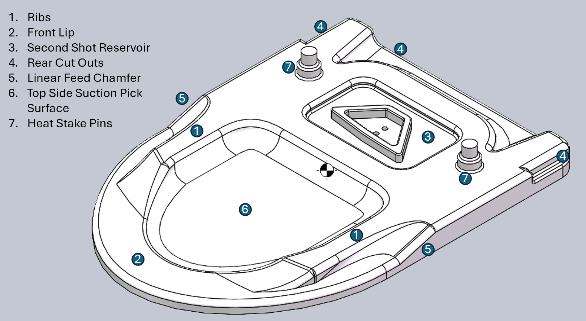
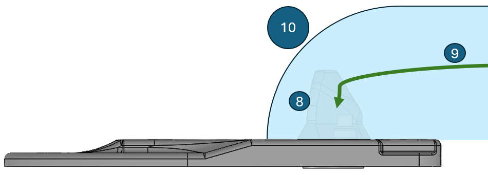
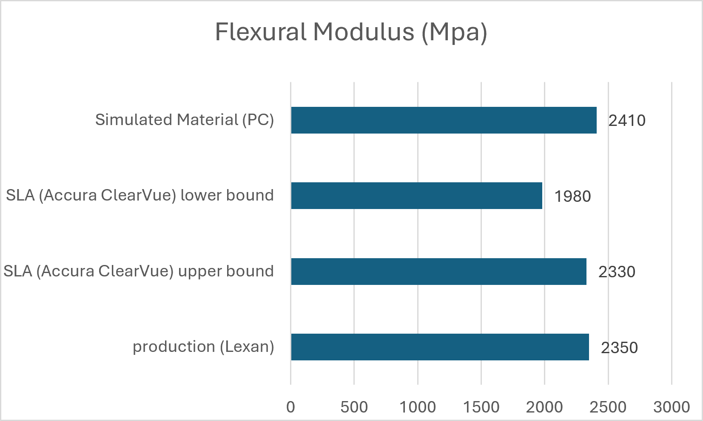
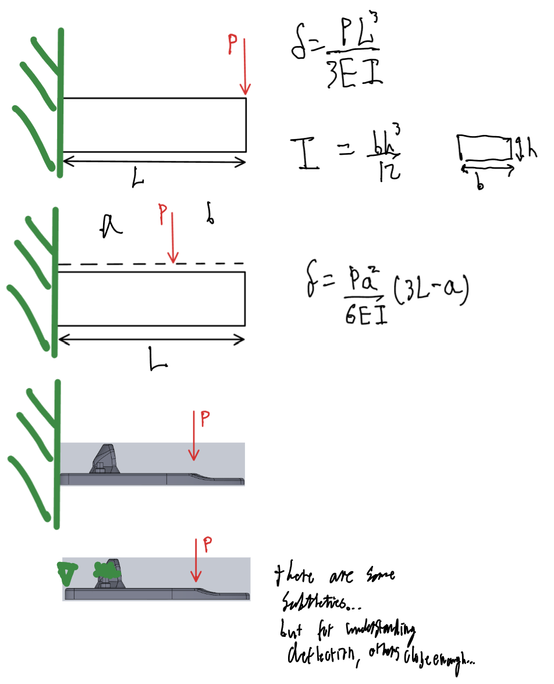
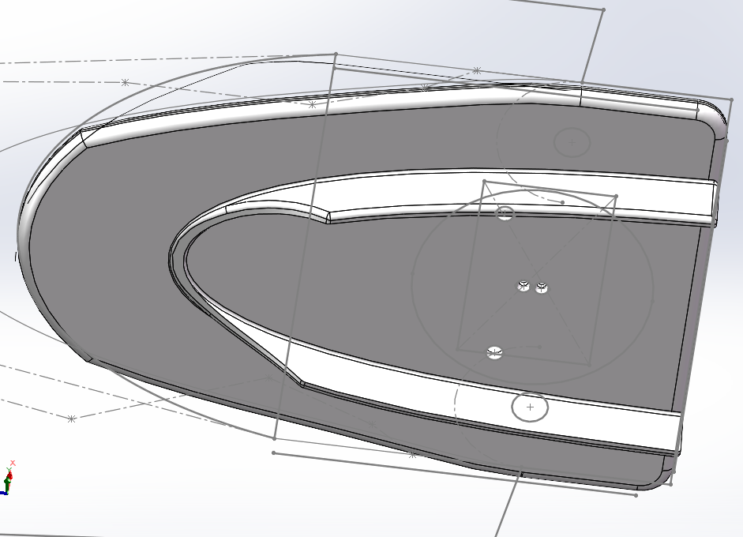

Redesigned Needle Cap to use less material
with minimal increase in deflection
Insulet.
Outcome
23.4% less plastic · 70,000 lbs saved · $160,992/year saved · minimal tooling change required

Baseline
Final DesignThe OmniPod is a disposable insulin pump worn on the skin — over 128 million are made every year. Each device has a small plastic needle cap patients snap off when activating it. At that volume, even a small amount of plastic per cap adds up fast.
The obvious fix was a taller I-beam cross-section. But that is ugly, hard to injection-mold, and unpleasant to use. I needed a design that only changed the top half of the mold, had minimal impact on preexisting assembly line operations, tolerance stack, and user experience.
Using the same underlying stiffness principle I optimized the shape using FEA, cutting plastic by 23.4% for only a 22.5% reduction in stiffness, with minimal tooling changes required.
Design Anatomy


Sideview shown attached to the OmniPod, with secondshot included.
- Ribs — structural reinforcement running the length of the cap
- Front Lip — leading edge, first point of contact during feed
- Second Shot Reservoir — holds the second shot injection-molded material
- Rear Cut Outs — material removed where it least affects stiffness
- Linear Feed Chamfer — smooths transitions to reduce jamming risk during assembly
- Top Side Suction Pick Surface — flat area used by vacuum pick systems
- Heat Stake Pins — the intended break point when the cap is removed
- Second Shot Material — the second plastic injection that secures the needle
- Needle — the needle within the OmniPod
- OmniPod — the overall OmniPod, seen from the side
Design Iterations

1
2
3
4
5
6
ITERATION 1 / 6
Initial Design
Initial design concept used as the baseline for subsequent optimization.
3D Model — Final Design
"Mathematically/Theoretically Optimal" — Why Not?
 Volume:0.0294 in³, Mass reduction: -41.2%!
Volume:0.0294 in³, Mass reduction: -41.2%!
- Purely by the numbers: lowest deflection, most material saved (0.0294 in³, 16.5% more deflection at much lower mass) — the mathematically optimal answer.
- Required an entirely new mold
- Thin ribs risked failure in manufacturing
- Thin ribs risked puncturing packaging during transportation
- Feed-system redesign would be needed
- Felt fragile/less robust when tested by hand
This ruled it out early, before the FEA-based iterations — which is why they started from the existing mold's baseline instead of the theoretical optimum.
Experience, Learnings, and Skills
Sometimes constraints lead to even more efficient results, as seen by the move from the W shape concept to the two-prong design due to the topside vacuum pick constraint.
The best engineering decision sometimes is not the best overall decision in the context of the product due to the tradeoffs dictated by circumstance.
The tradeoffs came from three different stages of the product's life:
- Upstream, when the needle cap is being manufactured;
- Midstream, when the needle cap is being assembled into the product;
- Downstream, when the Omnipod is being transported and the needle cap is broken off it;
Upstream
- The existing mold is two parts, top and bottom. To minimize the cost of mold changes, it's best to only change the top part given the bottom part both faces the package seal, as well as being a vacuum pick surface.
- Each rib, and feature of the injection molded part require specific thicknesses and rules to facilitate even hardening
- The well area for the second injection molded part required a perimeter wall of a specific thickness to ensure consistent injection molding of the second shot.
Midstream
- The overall height and dimensions are also constrained by the existing feed systems
- For certain designs, the linear feeders have an increased risk of jamming. As such transitions between the top part and lower parts have a chamfer to reduce that risk
- The vacuum pick surface is not only on the bottom, but also the top in an upcoming Chinese plant, meaning enough surface area needs to be maintained to facilitate that
Downstream
- Risks of packaging puncture from sharper surfaces during transportation
- Psychological and subjective factors regarding aesthetics, intuitiveness, and feel
While continuous conversations on the constraints helped crystalise the designs, further simulations and physical prototypes gave me insight into less obvious characteristics. It is vital to also conduct tests in person.
It is easier to gauge different aspects of the part quickly in a way uncaptured by test criteria. For example, pressing specifically at the tip, or twisting to open. Of course, it's important to know that SLA and injection molded parts have different characteristics when making a judgement on a part's strength based on how it's manufactured and what material is used. Discussion with technicians here is critical.

For the materials used, there was a 2-18% difference in strength between the prototype and the production part.
Finally, while constraints can give rise to better designs, so can informal tests and interactions. Engineering can be both very structured, and very informal.
Motivations
I joined Insulet because I wanted to work on a product that improves people's daily lives, and this project let me extend that into sustainability — cutting the plastic footprint of a device patients rely on every day.
This wasn't part of my assigned scope. A busy senior engineer suggested I "take a shot at it." I spent three months working on it alongside my primary validation work, because I saw a chance to apply my FEA and design skills toward the company's broader mission as well as my own.
Technical Details
The needle cap is a class 3 lever, designed to snap off at its heat stake pins when the patient primes the pod. The physical test validates that the cap reliably breaks at the stakes at a predictable force, rather than deforming or fracturing elsewhere. My senior didn't specify a stiffness floor for the cap itself, but reasoning through the lever mechanics, I realized a cap that's too compliant risks absorbing force as bending instead of transmitting it cleanly to the stakes, which could shift where and how reliably the part breaks.
I also believed that a cap that felt flimsy in hand would undermine user confidence in the device, even if it technically passed every test. Between the functional risk and that judgment call, I treated stiffness retention as a self-imposed constraint from the outset, rather than optimizing purely for material reduction.
To validate designs against this, I mirrored Insulet's physical break-force test in FEA — same fixture points, same load location and direction — so I could check each iteration against the same pass/fail bar the physical part would eventually face, before printing anything.
As seen in the diagrams below, the left is the physical test jig, with the heat stake pins embedded. When simplified and broken down, it translated to a cantilever beam with a load near the end. When simulating, however, I matched the boundary criteria more closely, with the heat stake pins set as fixed boundaries, and the rear face as a pin.

When looking at optimizing (what is essentially) a cantilever beam design and getting the most efficient design in terms of minimizing deflection for a given force, there are a few answers according to the beam bending equation in order of effectiveness:
- Change the cross-sectional geometry to increase the second area moment of inertia — for a rectangular cross section, increase the height, and make it more like an I-beam.
- Reduce the lever length
- Increase the strength of the material
- Reduce the force
There are some subtleties, but generally, as can be seen by the beam bending equation, the most effective change would be increasing the height of the beam or shortening the length. The illustration also shows how it relates to the needle cap. The differences between the top and the bottom are relatively minor, with the top hand calculation case being a worse case.
My first design, based on hand calculations and beam bending theory, used two long rectangular ribs, a flattened the top side, with a dimple as a cue for where users could push down.

This design was essentially the most effective design from purely the displacement and material savings standpoint, increasing deformation by only 16.5%, while saving 40% of the material when tested as prescribed.
However there were still multiple problematic criticisms for manufacture, assembly, and user experience.
- Difficult to manufacture, very thin geometries make parts very likely to fail. A completely new mold would also be required.
- Assembly line set up, would require redesign of feeding system and reworking of vacuum pickups within cells.
- Other features like vents and heat stakes would also require relevant redesigns
- Increased height and sharp ribs would require change in packaging, as well as risk puncturing seal during transportation.
User Experience
Intended breaking direction may not be as clear. May not be as comfortable to use due to the ribs, even with clearance cut. Less robust when pushed in other "incorrect" directions like twisting or pulling up. Was especially weak when pushed from the very nose, instead of the designed point.
Feeling of more give may inadvertently make the force required to break the heat stakes harder than expected or increase the perception of the force required.
There were many different optimizations made, but the biggest lever was the implementation of the prongs and figuring out what was the most efficient configuration.
I thinned out ribs from the center to outside, and then vice versa to try to find the optimal thickness of the ribs (as can be seen in the first two iterations).
I found out that keeping just the ribs directly inline with the heat stakes pins was most efficient.
Additionally, when printing each iteration out and testing by hand, I noticed that all the needle caps were snapping in the same place. It was partly due to the printing orientation but also due to the design.
Looking at the tip thickness, it was simply too thin, and not well integrated enough with the ribs, meaning the loading path was not as optimized as it could be. It may have been a stress concentration.
as seen in the design iterations, the break for the final iteration was further back, nearer to the base of the rib as opposed to the junction between the tip and the rib. It was much harder to break in general and was qualitatively more robust in twisting as well.
Improvements
Given the limited time in which I had with this project, I would have liked to work on:
- Investigating injection gating location and mold fillability simulations
- Ordering injection molded prototyping with Xometry
- Comparing my design with computer generated Topology Optimisation
- Conducting formalised testing of physical prototypes, with validation of simulation accuracy using existing design and quantifying error
- Simulation with alternative opening methods like twisting (my personal preference)
- A user feedback study of how it feels to use when installed on an actual pod.
Phone
(000) 000-0000 x12387Address
1234 Somewhere Road #5432Nashville, TN 00000
United States of America